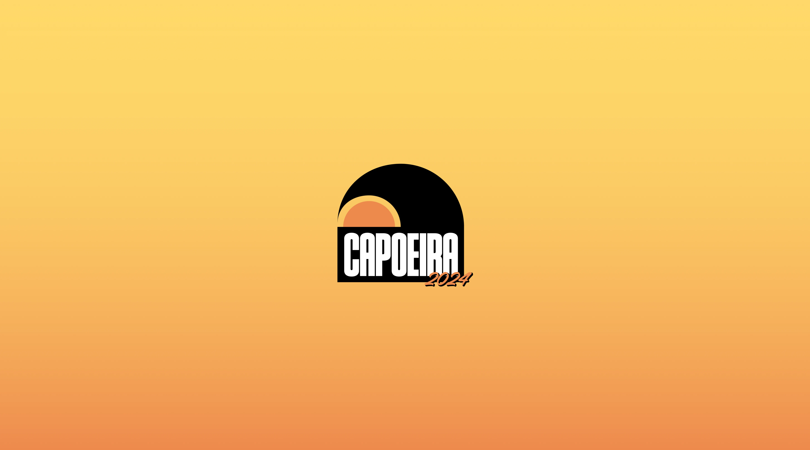
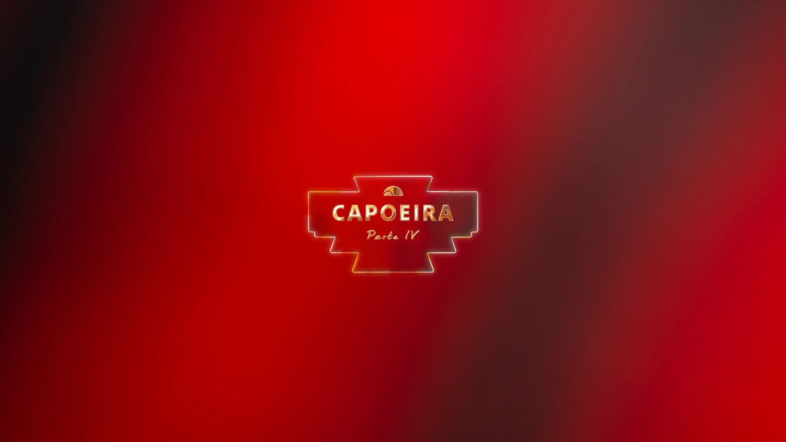
Some of the best creative work happens when there's no client, no budget, and no rules. Capoeira started as a private party among friends and became an annual event with a full visual identity — renewed from scratch every edition.
Capoeira is a private, invitation-only event conceived as a visual and sensory experience. Each edition takes its aesthetic direction from iconic films, reinterpreting their visual language with humor, nostalgia, and a summer-soaked energy that's entirely its own. I was responsible for the full creative direction of the brand — including logo design, poster design, promotional materials, and the visual identity for each edition. The logo itself is a conceptual piece: a marine wave wrapping around a sunset sun, subtly forming the letters "C" and "P" — the initials of Capoeira — integrated into the symbol rather than placed beside it.
Beyond the visual identity, I wrote and directed the official trailer for the event — a short film produced with cinema cameras, professional lighting, and a full location shoot. From script to final cut, the trailer was conceived as a cinematic piece in its own right, setting the tone and building anticipation for the event in a way that went far beyond a standard promotional video.
The challenge of Capoeira is that everything resets every year. New theme, new references, new visual language — but the same underlying brand. Designing within that constraint has sharpened my ability to reinvent a creative direction while keeping a coherent identity across editions.
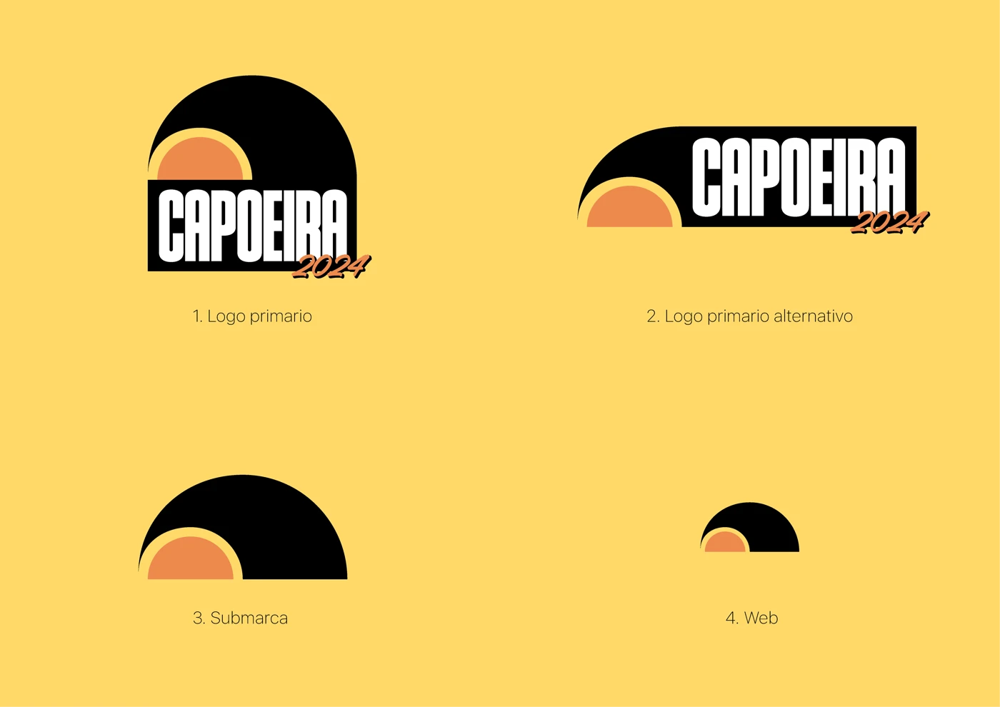
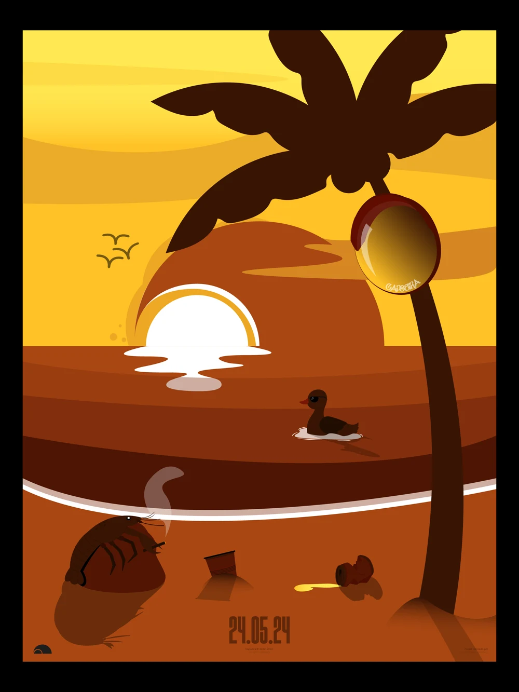
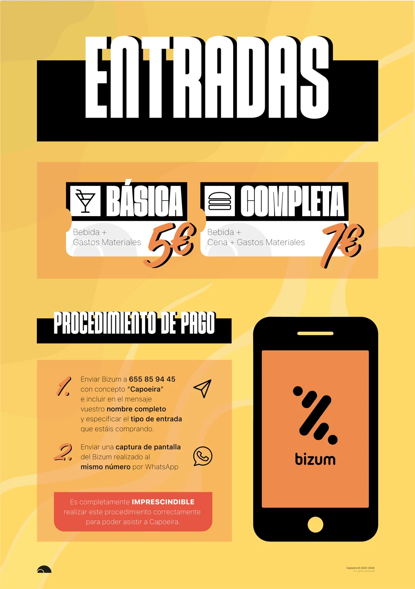
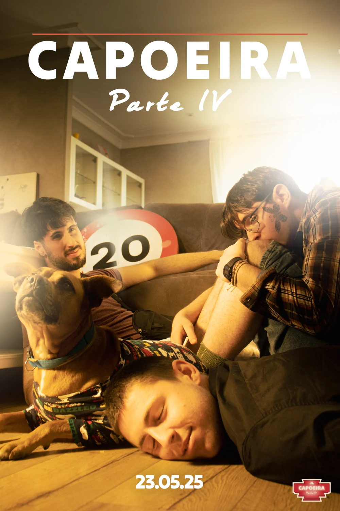
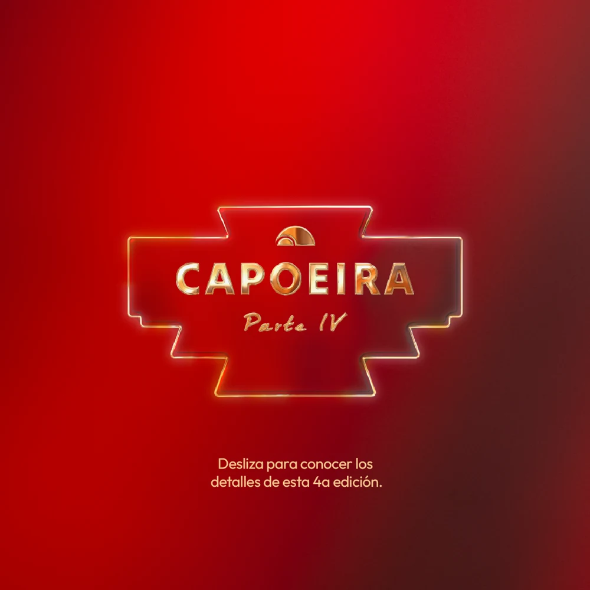
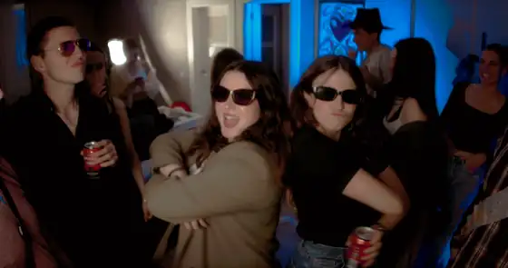
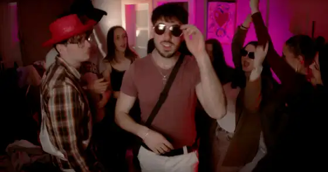
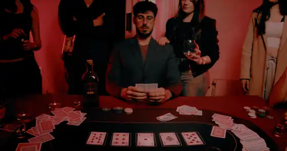
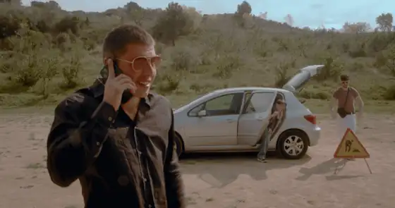
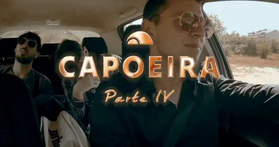
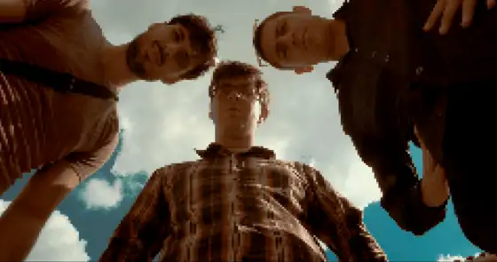